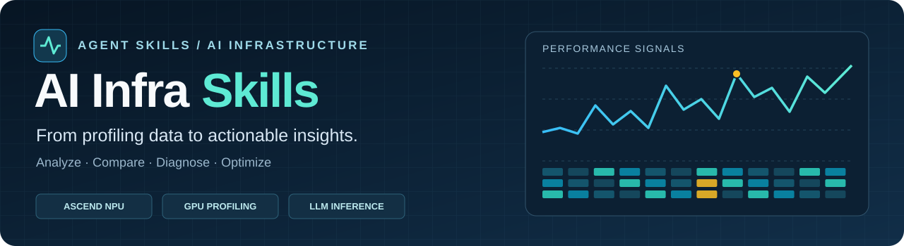

性能全景分析
cluster-analysis一份 Prof，自动识别慢卡、计算、通信与 Host 瓶颈。
输入：单份昇腾 Prof / 集群分析输出
交付：HTML · MD · CSV · Excel

按数据与问题选择能力。以下是分析能力层次示意，并非固定执行顺序，也不代表实测性能数据。

三大性能分析核心能力，以及 Host、推理、环境、故障和硬件诊断能力。
cluster-analysis一份 Prof，自动识别慢卡、计算、通信与 Host 瓶颈。
输入：单份昇腾 Prof / 集群分析输出
交付：HTML · MD · CSV · Excel
cluster-compare两份集群数据，拆解差异、判断通信带宽与异常 Rank。
输入：两份昇腾集群数据
交付：HTML · MD
prof-compareNPU/GPU 或 NPU/NPU 比对，下钻算子、Kernel、Shape 和单次执行。
输入：两份单卡 Prof / compare XLSX
交付：HTML · 中文 Excel · JSON · CSV
cpu-host-performance分析调度延迟、CPU 频率、IRQ、NUMA 与绑核方案。
输入：ftrace / CPU 采集包
交付：HTML · MD · 绑核建议
vllm-ascend-tuning从并行策略、编译、量化到 TTFT、TPOT 和吞吐基准验证。
输入：模型、硬件、配置及测试目标
交付：YAML · 调优配置 · 基准结果
ascend-dump-analyzer环境体检、多环境配置漂移分析和版本配套核对。
输入：环境 dump / 版本清单
交付：HTML · MD
issue-analyzer定位报错、中断和 hang，构建日志证据链及回验路径。
输入：现网日志及问题描述
交付：MD · 错误摘要
ibmc-analyzer基于 iBMC 日志检查硬件风险及多节点配置差异。
输入：iBMC dump_info / 日志包
交付：HTML · JSON
一份 Prof，自动识别慢卡、计算、通信与 Host 瓶颈。
使用 cluster-analysis 分析 ./prof_data，找出主要性能瓶颈、异常 Rank 及证据，生成完整 HTML 报告。
git clone https://github.com/hu669293657/skills.git
让可执行本地命令的 Agent 读取完整 Skill 目录中的 SKILL.md，并核对依赖与输入。
提供实际路径、分析目标及基准方向，检查生成的报告和证据。
各 Agent 的技能发现机制与权限可能不同；本仓库没有统一安装器。生产变更需经审批与验证。
性能全景：performance_report.html
双集群比对：cluster_compare_report.html
单卡 Prof 比对：compare_analysis_report.html 与中文 Excel。
目前未发布公开演示报告或可复现基准。实际分析覆盖取决于输入数据及运行环境。请勿公开含敏感信息的日志和报告。